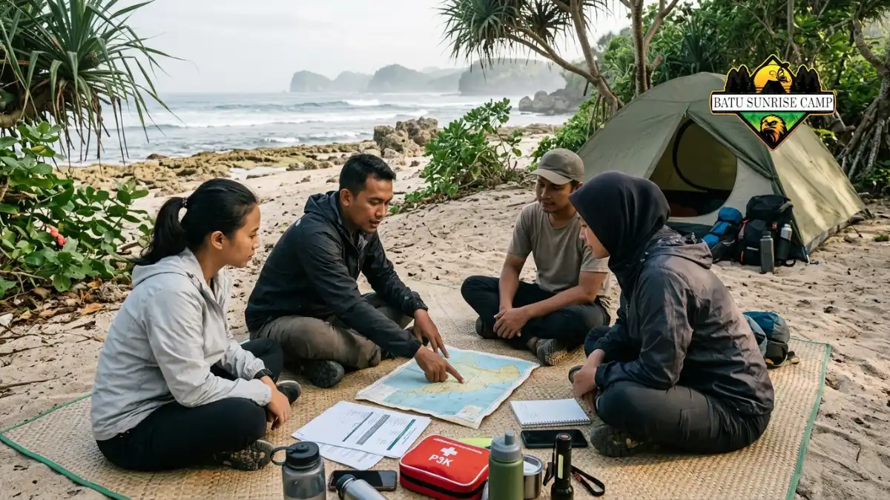

Tips aman camping di pantai terpencil meliputi mengecek prakiraan BMKG, menghindari pasang tertinggi, tidak berenang di arus kuat, dan membagikan rencana perjalanan kepada orang tepercaya.
- Cek prakiraan cuaca dan tinggi gelombang BMKG sebelum dan saat berangkat.
- Dirikan tenda di atas garis pasang tertinggi dan jauh dari tebing rapuh.
- Hindari berenang sendirian, malam hari, atau di area berarus kuat.
- Siapkan rencana darurat, kontak bantuan, dan jalur keluar yang jelas.
- Bila kondisi memburuk, batalkan atau percepat kepulangan tanpa ragu.
Bagaimana Membaca Prakiraan Gelombang BMKG Sebelum Camping?
Bacalah prakiraan tinggi gelombang BMKG untuk perairan terdekat, lalu tunda camping bila gelombang masuk kategori tinggi atau cuaca ekstrem diperkirakan terjadi.
BMKG menyediakan informasi cuaca maritim, termasuk prakiraan tinggi gelombang per wilayah perairan, melalui situs resminya di bmkg.go.id.
Dalam klasifikasinya, tinggi gelombang 1,25 hingga 2,5 meter masuk kategori sedang, sedangkan 2,5 hingga 4 meter masuk kategori tinggi. Kategori tinggi dinilai berbahaya bagi perahu kecil dan aktivitas di pantai.
Periksa prakiraan beberapa hari sebelum berangkat dan sekali lagi pada hari keberangkatan. Perhatikan juga peringatan dini cuaca, hujan lebat, dan angin kencang, karena kondisi ini memengaruhi tenda serta jalur trekking.
Bila Anda memakai perahu untuk menuju pantai, tanyakan juga kepada nakhoda setempat. Mereka memahami kondisi perairan lokal yang kadang tidak tergambar penuh pada prakiraan umum.
Bagaimana Menghindari Risiko Pasang Naik di Pantai Terpencil?
Hindari risiko pasang dengan mencatat jadwal pasang surut, memilih titik tenda di atas garis pasang tertinggi, dan memastikan jalur keluar tetap bisa dilalui saat air naik.
Menurut NOAA, pasang surut semi-harian memiliki siklus sekitar 12 jam 25 menit antara dua pasang tertinggi. Pantai yang lebar saat surut dapat menyempit dengan cepat beberapa jam kemudian, terutama di sekitar bulan baru dan bulan purnama.
Cari tanda garis pasang tertinggi di pantai, seperti deretan rumput laut kering, kayu apung, dan sampah yang terdampar. Dirikan tenda di atas garis tersebut dengan margin yang cukup.
Perhatikan juga jalur masuk dan keluar. Apabila rute tersebut melewati celah yang terbatas di antara tebing dan laut, maka perlu dilakukan perhitungan waktu yang aman untuk melintasi area tersebut. Jangan mengandalkan perkiraan kasar, dan siapkan alternatif jika jalur tertutup air.
Bagaimana Mengenali dan Menghindari Arus Balik?
Arus balik dikenali dari jalur air yang tampak tenang namun keruh, berbuih, atau membawa sampah ke laut, dan dihindari dengan tidak berenang di area tersebut.
Arus balik adalah aliran air yang kuat menuju laut lepas dan dapat menyeret perenang dengan cepat. Ciri visualnya antara lain celah di antara gelombang pecah, warna air berbeda, dan bidang air yang tampak lebih tenang di tengah gelombang di sisinya.
Jika Anda terjebak arus, jangan melawan secara langsung. Tetap tenang, berenang sejajar pantai untuk keluar dari jalur arus, lalu berenang kembali ke arah pantai. Bila lelah, mengapung dan lambaikan tangan untuk meminta bantuan.
Cara paling aman adalah menghindari berenang di pantai terpencil tanpa penjaga, terutama bagi pemula. Pilih area dangkal dan tenang bila ingin bermain air, dan jangan pernah berenang sendirian atau saat malam.
Di Mana Titik Tenda yang Aman dari Angin, Tebing, dan Satwa?
Titik tenda yang aman berada di atas garis pasang, jauh dari tebing rapuh dan pohon rawan tumbang, terlindung dari angin, serta tidak berada di jalur satwa.
Tebing dan batuan di pantai dapat longsor, terutama setelah hujan deras. Dirikan tenda dengan jarak aman dari dinding tebing, dan hindari berkemah di bawah pohon besar dengan dahan rapuh.
Perhatikan arah angin. Posisi di belakang bukit pasir atau vegetasi rendah dapat mengurangi hembusan, tetapi jangan menutup jalur air hujan yang dapat menggenangi tenda. Pilih tanah yang sedikit lebih tinggi agar air mengalir menjauh.
Simpan makanan dan sampah dalam wadah tertutup, jauh dari area tidur. Aroma makanan dapat menarik hewan seperti monyet, biawak, atau tikus.
Jangan memberi makan satwa liar karena kebiasaan tersebut membahayakan mereka dan pengunjung berikutnya.
Bagaimana Menyiapkan Rencana Darurat di Lokasi Tanpa Sinyal?
Siapkan rencana darurat dengan membagikan itinerari, menetapkan jam kembali, mengetahui titik sinyal terdekat, dan membawa peluit serta perlengkapan pertolongan pertama.

Kelompok camping menyusun rencana darurat lengkap dengan peta, peluit, dan perlengkapan pertolongan pertama sebelum mendirikan tenda di pantai terpencil.
Sebelum berangkat, beri tahu keluarga atau teman tentang lokasi, jumlah anggota, dan jam perkiraan pulang.
Sepakati batas waktu, misalnya jika tidak ada kabar dua jam setelah jadwal, mereka menghubungi pengelola kawasan atau pihak berwenang setempat.
Catat nomor kontak penting: kantor desa, pengelola kawasan, dan layanan darurat terdekat. Cari tahu titik tertinggi atau area tertentu yang biasanya memiliki sinyal, karena di banyak pantai terpencil jaringan hanya tersedia di lokasi terbatas.
Tunjuk satu anggota kelompok sebagai penanggung jawab keselamatan. Bahas langkah yang diambil jika ada cedera, cuaca ekstrem, atau anggota hilang. Perlengkapan pendukung dibahas di perlengkapan camping di pantai.
Apa yang Harus Dilakukan Jika Cuaca Tiba-Tiba Memburuk?
Jika cuaca memburuk, pindah ke lokasi lebih tinggi dan terlindung, amankan perlengkapan, hentikan aktivitas air, dan percepat kepulangan bila jalur masih aman.
Angin kencang, hujan lebat, dan petir dapat muncul dengan cepat. Segera hentikan aktivitas di air dan jauhi area terbuka saat ada petir. Jangan berlindung di bawah pohon tinggi atau berdiri di titik tertinggi yang terbuka.
Perkuat tenda dengan tali tambahan, pindahkan barang penting ke bagian dalam, dan pastikan ventilasi tetap terbuka agar tidak pengap. Jika air mulai naik atau tanah mulai menggenang, pindah ke area lebih tinggi sebelum gelap.
Pertimbangkan jalur pulang sebelum kondisi lebih buruk. Meninggalkan lokasi lebih awal sering lebih aman daripada bertahan. Jangan memaksakan perjalanan malam melewati jalur licin, sempit, atau berbatu bila visibilitas rendah.
Bagaimana Menjaga Kesehatan dan Mencegah Dehidrasi?
Jaga kesehatan dengan minum teratur, memakai pelindung matahari, istirahat di tempat teduh, dan mengenali gejala dehidrasi, sengatan panas, serta kelelahan sejak dini.
Panas, angin, dan garam di pantai membuat tubuh cepat kehilangan cairan. Minumlah sedikit demi sedikit secara teratur, jangan menunggu haus. Cairan elektrolit dapat membantu bila Anda berkeringat banyak.
Kenali gejala dehidrasi: pusing, mulut kering, urine pekat, dan lemas. Bila muncul, berhenti, berteduh, dan minum perlahan. Jika gejala berat atau tidak membaik, segera cari bantuan medis.
Informasi di artikel ini bersifat umum dan bukan pengganti nasihat tenaga kesehatan. Pengunjung dengan kondisi medis tertentu sebaiknya berkonsultasi dengan dokter sebelum camping di lokasi terpencil. Panduan pemilihan lokasi lengkap tersedia di lokasi camping pantai tersembunyi.
Kesimpulan
Keselamatan camping di pantai terpencil bertumpu pada persiapan. Periksa prakiraan BMKG, pahami siklus pasang surut, dan pilih titik tenda di atas garis pasang tertinggi serta jauh dari tebing rapuh.
Hindari berenang di arus kuat atau sendirian, bagikan rencana perjalanan, dan siapkan rencana darurat. Jika kondisi memburuk, mundur lebih awal adalah keputusan yang tepat.

Pertanyaan Umum (FAQ)